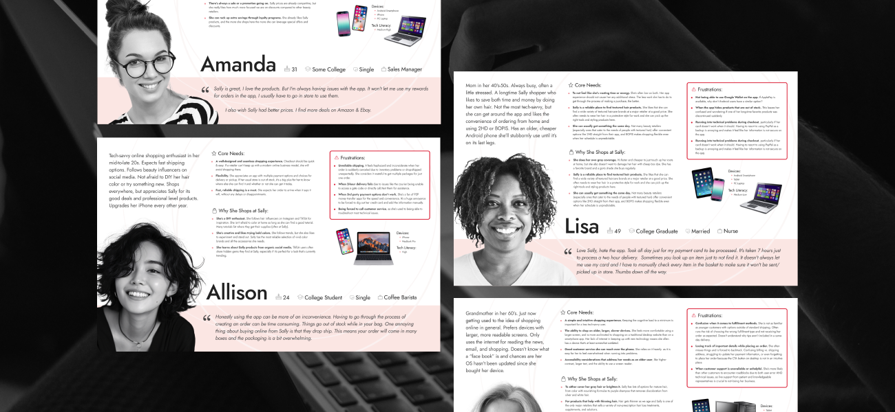

Personas: Sally App Customers
I led user research to create data-driven customer personas for Sally Beauty's mobile app. These personas translated complex research findings into accessible insights that guided feature prioritization and enabled stakeholders to make more informed, user-centered product decisions.
PROJECT INFO
- Company: Sally Beauty Holdings, Inc.
- Project Length: 2 months
- Platform: Mobile App
MY ROLE
- UX/UI Designer
- Researcher
- User Test Facilitator
CROSS-FUNCTIONAL COLLABORATION
- Back-end Developers
- Customer Support
- Analytics Team
- Product Team
METHODS & TOOLS
- Figma
- SMG 360
- Google Analytics
- Monetate
- Persona Development
- Empathy Mapping
- User Interviews
- Qualitative Data Analysis
At a Glance:
Personas are a useful method to humanize data trends and apply a customer-centered approach to product development. Using a wide range of data, from user surveys and reviews to interviews with customer service representatives, we were able to analyze trends and patterns that helped us broadly categorize different types of users and how we can improve their experiences.
The result? These personas humanized complex data trends and provided the product team with clear frameworks for understanding diverse user needs. Each persona includes demographic details, shopping behaviors, app usage patterns, frustrations, and goals, making research insights immediately actionable for feature prioritization and product decisions. The personas became foundational reference tools used across the organization to maintain user-centered focus throughout the app development process.
JUMP TO A SECTION:
Discovery & Research | Aggregated Empathy Maps | Final Personas
Discovery & Research
Understanding Our Users
We wanted to better understand our app users and mobile web users as distinct customer bases and gain valuable insight into their core needs and biggest frustrations. I started out with a few basic questions I knew would need to be explored in the course of my research:
- Who are our online customers? What are their shopping habits, their expectations, their devices, and their preferences?
- Why do people shop on the app vs. the website? Why might they have a preference or a need to use one over the other?
- What are the unique pain points of each platform? What pain points do they have in common?
- How easy is the app to use? How does it compare to the mobile web experience?
- Why do some people download the app and others don't?
User feedback data organized by topic and by positive or negative sentiment
Quantitative Data
We compiled large amounts of information on various metrics related to the performance of the site and app (engagement rate, device usage, browser types, geo data, funnels, OS versions, downloads, etc.) to get a more concrete picture of who is using what. Information came from the following sources:
- Google Analytics (sourced for us by the analytics team)
- Audience discovery via Monetate
Qualitative Data
We also collected hundreds of comments left by customers, both positive and negative, on their experiences with the app and the website. We compiled and sorted them to help identify overall patterns that emerged. To ensure that we were getting an accurate picture, we limited our data set to comments made within the last 3 months. Information came from the following sources:
- SMG 360/ Voice of the Customer
- App Store & Google Play Reviews
Interviews With Customer Support Agents
Finally, we scheduled live interviews over WebEx with four Sally Customer Care Support Agents, who answered several of our questions about app and web users and provided valuable, highly specific insight that we would not have been able to pick up from data and reviews alone. They also helped to corroborate the accuracy of general complaints we noticed from customer reviews. Each interview lasted from 30 minutes to an hour.
Aggregated Empathy Maps
Empathy maps are a method to visualize and communicate our understanding of a set of users. Aggregated empathy maps represent a user segment, rather than one particular user. They are created by combining multiple users who exhibit similar behaviors and can be grouped into one segment.
Empathy maps have four quadrants that capture the following:
- Says: direct quotes by the user taken from research
- Thinks: the user's thoughts, motivations, and needs framed in first-person statements
- Does: the behaviors or the actions of the user, either directly identified or inferred by info from the other quadrants
- Feels: the user's emotional state during the process
They are also a great tool for planning future research, particularly for identifying what we are unsure about. As we developed them with the intent to be the foundation of our personas, the maps were an incredibly useful tool for keeping us organized.
Aggregated empathy maps for Sally Beauty app users, sorted into demographic groups through analyzing recurring patterns of user needs and frustrations
Final Personas
I organized my insights into general groups that represent customers with similar characteristics, needs, goals, and behaviors.
Once the empathy maps felt solid, I consolidated them into individual user personas. I came up with 5 personas that best represent our real world customers and their overall experience with the Sally app. Our team focused primarily on customer pain points to help us identify where we need the most improvements, but these personas were designed in a way that makes it easy to explore new questions about our users.
Allison, representing users under 30. Prefers shopping on apps over websites. Follows social media trends. Goes to Sally for products she can't find elsewhere.
Amanda, representing a large section of Sally's customer base. Primarily motivated by saving money and uses the app to find the best deals on products she wants.
Lisa, representing customers over 40 who are less tech-savvy than younger users. A longtime Sally shopper who strongly values convenience and reliability.
Jane, representing the oldest demographic of Sally's customers with low tech literacy. Runs into technical problems more frequently than other users and relies on good customer service.
Alex, representing industry professionals and Sally's Canadian customers. Strongly feels that the app could be improved to better meet the needs of both groups.